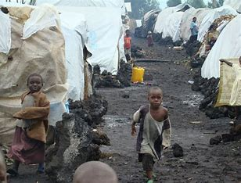
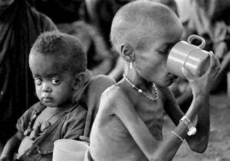
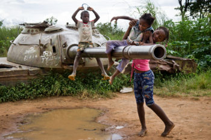

Sobre a África
"Apesar da enorme riqueza do continente, muitos países africanos apresentam baixos índices de desenvolvimento, com diversos problemas sociais, como a miséria, baixa qualidade de vida, subnutrição e o analfabetismo."
Dos 30 países mais pobres do mundo, 21 são africanos.

Economia Africana
Muitos países são considerados subdesenvolvidos.
Índices econômicos e de desenvolvimento humano apontam que o continente africano é o mais pobre entre os continentes.

A piora da fome e subnutrição
A situação tem levado milhões de pessoas a abandonar seus campos.
Na região do Sahel vivem 8,2 milhões de deslocados internos devido a conflitos. A violência no Sudão, na República Centro-Africana e na Nigéria forçou mais de 1 milhão de pessoas a entrar no Chade, o quinto maior anfitrião de refugiados do mundo.

Conflitos armados.
. De acordo com o ACNUR, a África é o continente com o maior número de conflitos armados ativos.
Especificamente, um total de 25 guerras ou conflitos. Os danos que a violência causa à população são aumentados pela duração desses conflitos que nunca terminam ou ressurgem de vez em quando.